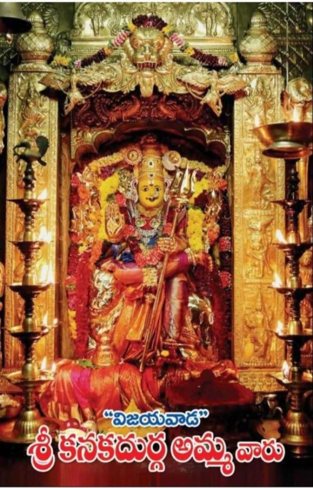
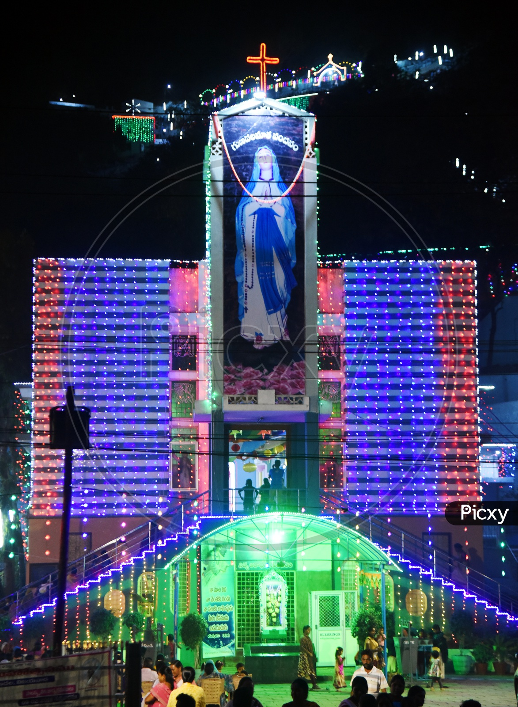

Vijayawada
- The Vijayawada is one of tourism place in Andhra pradesh
- The distict of Vijayawada is krishna and the river also
- The lord of Kanakudurgma
- The lord of Kanakudurgma after darshan to visting places is more
- After darshan to visit the gunadala meri matha temple it's a charch
- To distance is temple to church upto 5km
- After church to visit the Bhavani highland
The Vijayawada is one of tourism place in Andhra pradesh
The distict of Vijayawada is krishna and the river also
The lord of Kanakudurgma
The lord of Kanakudurgma after darshan to visting places is more
After darshan to visit the gunadala meri matha temple it's a charch
To distance is temple to church upto 5km

After church to visit the Bhavani highland
The Bhavani highland is so beautiful parks and games in Vijayawada
To visit the place is go to boating in krishna river
To enjoy ed a lot of this park
And one more visiting place in Vijayawada that is manasa sarovar water park
More water games in that park full enjoyment
After church to visit the Bhavani highland
The Bhavani highland is so beautiful parks and games in Vijayawada
To visit the place is go to boating in krishna river
To enjoy ed a lot of this park
And one more visiting place in Vijayawada that is manasa sarovar water park
More water games in that park full enjoyment

To eat a food in Vijayawada sri anjaneya restarent in Bhavani puram tasty food and reasonble cost
To travel in 15km to visit a highland near Vijayawada
The cost of entrance is 800Rs three games are free of cost any three games
More enjoyment in highland full water games and normal games in highland